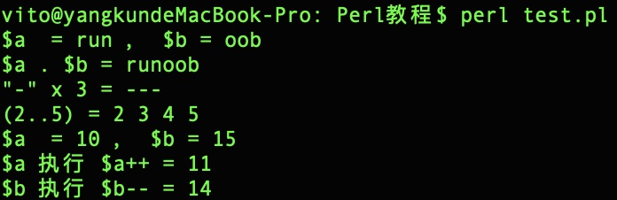

Perl 运算符
运算符是一种告诉编译器执行特定的数学或逻辑操作的符号，如: 3+2=5。
Perl 语言内置了丰富的运算符，我们来看下常用的几种：
算术运算符
表格实例中我们设置变量 $a 为 10， $b 为 20。
| 运算符 | 描述 | 实例 |
|---|---|---|
| + | 加法运算 | $a + $b 结果为 30 |
| - | 减法运算 | $a - $b 结果为 -10 |
| * | 乘法运算 | $a * $b 结果为 200 |
| / | 除法运算 | $b / $a 结果为 2 |
| % | 求余运算，整除后的余数 | $b % $a 结果为 0 |
| ** | 乘幂 | $a**$b 结果为 10 的 20 次方 |
实例
#!/usr/bin/perl
$a = 10;
$b = 20;
print "\$a = $a , \$b = $b\n";
$c = $a + $b;
print '$a + $b = ' . $c . "\n";
$c = $a - $b;
print '$a - $b = ' . $c . "\n";
$c = $a * $b;
print '$a * $b = ' . $c . "\n";
$c = $a / $b;
print '$a / $b = ' . $c . "\n";
$c = $a % $b;
print '$a % $b = ' . $c. "\n";
$a = 2;
$b = 4;
$c = $a ** $b;
print '$a ** $b = ' . $c . "\n";
以上程序执行输出结果为：
比较运算符
表格实例中我们设置变量 $a 为 10， $b 为 20。
| 运算符 | 描述 | 实例 |
|---|---|---|
| == | 检查两个操作数的值是否相等，如果相等则条件为 true，否则为 false。 | ($a == $b) 为 false |
| != | 检查两个操作数的值是否相等，如果不相等则条件为 true，否则为 false。 | ($a != $b) 为 true。 |
| <=> | 检查两个操作数的值是否相等, 如果左边的数小于右边的数返回 -1，如果相等返回 0, 如果左边的数大于右边的数返回 1 。 | ($a <=> $b) 返回 -1。 |
| > | 检查左操作数的值是否大于右操作数的值，如果是则条件为 true，否则为 false。 | ($a > $b) 返回 false。 |
| < | 检查左操作数的值是否小于右操作数的值，如果是则条件为 true，否则返回 false。 | ($a < $b) 返回 true。 |
| >= | 检查左操作数的值是否大于或等于右操作数的值，如果是则条件为 true，否则返回 false。 | ($a >= $b) 返回 false。 |
| <= | 检查左操作数的值是否小于或等于右操作数的值，如果是则条件为 true，否则返回 false。。 | ($a <= $b) 返回 true。 |
实例
#!/usr/bin/perl
$a = 10;
$b = 20;
print "\$a = $a , \$b = $b\n";
if( $a == $b ){
print "$a == \$b 结果 true\n";
}else{
print "\$a == \$b 结果 false\n";
}
if( $a != $b ){
print "\$a != \$b 结果 true\n";
}else{
print "\$a != \$b 结果 false\n";
}
$c = $a <=> $b;
print "\$a <=> \$b 返回 $c\n";
if( $a > $b ){
print "\$a > \$b 结果 true\n";
}else{
print "\$a > \$b 结果 false\n";
}
if( $a >= $b ){
print "\$a >= \$b 结果 true\n";
}else{
print "\$a >= \$b 结果 false\n";
}
if( $a < $b ){
print "\$a < \$b 结果 true\n";
}else{
print "\$a < \$b 结果 false\n";
}
if( $a <= $b ){
print "\$a <= \$b 结果 true\n";
}else{
print "\$a <= \$b 结果 false\n";
}
以上程序执行输出结果为：
以下表格实例中设置变量 $a 为 "abc" ， $b 为 "xyz" ，然后使用比较运算符来计算结果。
| 运算符 | 描述 | 实例 |
|---|---|---|
| lt | 检查左边的字符串是否小于右边的字符串，如果是返回 true，否则返回 false。 | ($a lt $b) 返回 true。 |
| gt | 检查左边的字符串是否大于右边的字符串，如果是返回 true，否则返回 false。 | ($a gt $b) 返回 false。 |
| le | 检查左边的字符串是否小于或等于右边的字符串，如果是返回 true，否则返回 false。 | ($a le $b) 返回 true |
| ge | 检查左边的字符串是否大于或等于右边的字符串，如果是返回 true，否则返回 false。 | ($a ge $b) 返回 false。 |
| eq | 检查左边的字符串是否等于右边的字符串，如果是返回 true，否则返回 false。 | ($a eq $b) 返回 false。 |
| ne | 检查左边的字符串是否不等于右边的字符串，如果是返回 true，否则返回 false。 | ($a ne $b) 返回 true |
| cmp | 如果左边的字符串大于右边的字符串返回 1，如果相等返回 0，如果左边的字符串小于右边的字符串返回 -1。 | ($a cmp $b) 返回 -1。 |
实例
#!/usr/bin/perl
$a = "abc";
$b = "xyz";
print "\$a = $a ，\$b = $b\n";
if( $a lt $b ){
print "$a lt \$b 返回 true\n";
}else{
print "\$a lt \$b 返回 false\n";
}
if( $a gt $b ){
print "\$a gt \$b 返回 true\n";
}else{
print "\$a gt \$b 返回 false\n";
}
if( $a le $b ){
print "\$a le \$b 返回 true\n";
}else{
print "\$a le \$b 返回 false\n";
}
if( $a ge $b ){
print "\$a ge \$b 返回 true\n";
}else{
print "\$a ge \$b 返回 false\n";
}
if( $a ne $b ){
print "\$a ne \$b 返回 true\n";
}else{
print "\$a ne \$b 返回 false\n";
}
$c = $a cmp $b;
print "\$a cmp \$b 返回 $c\n";
以上程序执行输出结果为：
赋值运算符
表格实例中我们设置变量 $a 为 10， $b 为 20。
| 运算符 | 描述 | 实例 |
|---|---|---|
| = | 简单的赋值运算符，把右边操作数的值赋给左边操作数 | $c = $a + $b 将把 $a + $b 的值赋给 $c |
| += | 加且赋值运算符，把右边操作数加上左边操作数的结果赋值给左边操作数 | $c += $a 相等于 $c = $c + $a |
| -= | 减且赋值运算符，把左边操作数减去右边操作数的结果赋值给左边操作数 | $c -= $a 相等于 $c = $c - $a |
| *= | 乘且赋值运算符，把右边操作数乘以左边操作数的结果赋值给左边操作数 | $c *= $a 相等于 $c = $c * $a |
| /= | 除且赋值运算符，把左边操作数除以右边操作数的结果赋值给左边操作数 | $c /= $a 相等于 $c = $c / $a |
| %= | 求模且赋值运算符，求两个操作数的模赋值给左边操作数 | $c %= $a 相等于 $c = $c % a |
| **= | 乘幂且赋值运算符，求两个操作数的乘幂赋值给左边操作数 | $c **= $a 相等于 $c = $c ** $a |
实例
#!/usr/bin/perl
$a = 10;
$b = 20;
print "\$a = $a ，\$b = $b\n";
$c = $a + $b;
print "赋值后 \$c = $c\n";
$c += $a;
print "\$c = $c ，运算语句 \$c += \$a\n";
$c -= $a;
print "\$c = $c ，运算语句 \$c -= \$a\n";
$c *= $a;
print "\$c = $c ，运算语句 \$c *= \$a\n";
$c /= $a;
print "\$c = $c ，运算语句 \$c /= \$a\n";
$c %= $a;
print "\$c = $c ，运算语句 \$c %= \$a\n";
$c = 2;
$a = 4;
print "\$a = $a ， \$c = $c\n";
$c **= $a;
print "\$c = $c ，运算语句 \$c **= \$a\n";
以上程序执行输出结果为：
位运算
位运算符作用于位，并逐位执行操作。
设置 $a = 60，$b = 13，现在以二进制格式表示，它们如下所示：
$a = 0011 1100 $b = 0000 1101 ----------------- $a&$b = 0000 1100 $a|$b = 0011 1101 $a^$b = 0011 0001 ~$a = 1100 0011
Perl 支持的位运算符如下表所示：
| 运算符 | 描述 | 实例 |
|---|---|---|
| & | 如果同时存在于两个操作数中，二进制 AND 运算符复制一位到结果中。 | ($a & $b) 将得到 12，二进制为 0000 1100 |
| | | 如果存在于任一操作数中，二进制 OR 运算符复制一位到结果中。 | ($a | $b) 将得到 61 ，二进制为 0011 1101 |
| ^ | 如果存在于其中一个操作数中但不同时存在于两个操作数中，二进制异或运算符复制一位到结果中。 | ($a ^ $b) 将得到 49，二进制为 0011 0001 |
| ~ | 二进制反码运算符是一元运算符，具有"翻转"位效果，即0变成1，1变成0。 | (~$a ) 将得到 -61 ，二进制为 1100 0011 ，一个有符号二进制数的反码形式。 |
| << | 二进制左移运算符。左操作数的值向左移动右操作数指定的位数。 | $a << 2 将得到 240 ，二进制为 1111 0000 |
| >> | 二进制右移运算符。左操作数的值向右移动右操作数指定的位数。 | $a >> 2 将得到 15 ，二进制为 0000 1111 |
实例
#!/usr/bin/perl
use integer;
$a = 60;
$b = 13;
print "\$a = $a , \$b = $b\n";
$c = $a & $b;
print "\$a & \$b = $c\n";
$c = $a | $b;
print "\$a | \$b = $c\n";
$c = $a ^ $b;
print "\$a ^ \$b = $c\n";
$c = ~$a;
print "~\$a = $c\n";
$c = $a << 2;
print "\$a << 2 = $c\n";
$c = $a >> 2;
print "\$a >> 2 = $c\n";
以上程序执行输出结果为：
逻辑运算符
Perl 逻辑运算符如下表所示。
表格实例中我们设置变量 $a 为 true, $b 为 false。
| 运算符 | 描述 | 实例 |
|---|---|---|
| and | 逻辑与运算符符。如果两个操作数都为 true，则条件为 true。 | ($a and $b) 为 false。 |
| && | C 风格的逻辑与运算符符。如果两个操作数都为 true，则条件为 true | ($a && $b) 为 false。 |
| or | 逻辑或运算符。如果两个操作数中有任意一个非零，则条件为 true。 | ($a or $b) 为 true。 |
| || | C 风格逻辑或运算符。如果两个操作数中有任意一个非零，则条件为 true。 | ($a || $b) 为 true。 |
| not | 逻辑非运算符。用来反转操作数的逻辑状态。如果条件为 true，则逻辑非运算符将使其为 false。 | not($a and $b) 为 true。 |
实例
#!/usr/bin/perl
$a = true;
$b = false;
print "\$a = $a , \$b = $b\n";
$c = ($a and $b);
print "\$a and \$b = $c\n";
$c = ($a && $b);
print "\$a && \$b = $c\n";
$c = ($a or $b);
print "\$a or \$b = $c\n";
$c = ($a || $b);
print "\$a || \$b = $c\n";
$a = 0;
$c = not($a);
print "not(\$a)= $c\n";
以上程序执行输出结果为：
引号运算
Perl 引号运算符如下表所示。
| 运算符 | 描述 | 实例 |
|---|---|---|
| q{ } | 为字符串添加单引号 | q{abcd} 结果为 'abcd' |
| qq{ } | 为字符串添加双引号 | qq{abcd} 结果为 "abcd" |
| qx{ } | 为字符串添加反引号 | qx{abcd} 结果为 `abcd` |
实例
#!/usr/bin/perl
$a = 10;
$b = q{a = $a};
print "q{a = \$a} = $b\n";
$b = qq{a = $a};
print "qq{a = \$a} = $b\n";
# 使用 unix 的 date 命令执行
$t = qx{date};
print "qx{date} = $t\n";
以上程序执行输出结果为：
其他运算符
除了以上我们提到的运算符外，Perl 还支持以下运算符：
| 运算符 | 描述 | 实例 |
|---|---|---|
| . | 点号 (.) 用于连接两个字符串。 | 如果 $a="run", $b="oob" ， $a.$b 结果为 "runoob" |
| x | x 运算符返回字符串重复的次数。 | ('-' x 3) 输出为 ---。 |
| .. | .. 为范围运算符。 | (2..5) 输出结果为 (2, 3, 4, 5) |
| ++ | 自增运算符，整数值增加 1 | $a =10, $a++ will 输出为 11 |
| -- | 自减运算符，整数值减少 1 | $a =10, $a-- 输出为 9 |
| -> | 箭号用于指定一个类的方法 | $obj->$a 表示对象 $obj 的 $a 方法。 |
实例
#!/usr/bin/perl
$a = "run";
$b = "oob";
print "\$a = $a ， \$b = $b\n";
$c = $a . $b;
print "\$a . \$b = $c\n";
$c = "-" x 3;
print "\"-\" x 3 = $c\n";
@c = (2..5);
print "(2..5) = @c\n";
$a = 10;
$b = 15;
print "\$a = $a ， \$b = $b\n";
$a++;
$c = $a ;
print "\$a 执行 \$a++ = $c\n";
$b--;
$c = $b ;
print "\$b 执行 \$b-- = $c\n";
以上程序执行输出结果为：

运算符优先级
下表列出了 Perl 语言的运算符优先级：
| 运算符符 | 结合性 |
|---|---|
| ++, -- | 无 |
| -, ~, ! | 从右到左 |
| ** | 从右到左 |
| =~, !~ | 从左到右 |
| *, /, %, x | 从左到右 |
| +, -, . | 从左到右 |
| <<, >> | 从左到右 |
| -e, -r, | 无 |
| <, <=, >, >=, lt, le, gt, ge | 从左到右 |
| ==, !=, <=>, eq, ne, cmp | 从左到右 |
| & | 从左到右 |
| |, ^ | 从左到右 |
| && | 从左到右 |
| || | 从左到右 |
| .. | 从左到右 |
| ? and : | 从右到左 |
| =, +=, -=, *=, | 从右到左 |
| 其他 | |
| , | 从左到右 |
| not | 从左到右 |
| and | 从左到右 |
| or, xor | 从左到右 |
实例
#!/usr/bin/perl
$a = 20;
$b = 10;
$c = 15;
$d = 5;
$e;
print "\$a = $a, \$b = $b, \$c = $c ，\$d = $d\n";
$e = ($a + $b) * $c / $d;
print "(\$a + \$b) * \$c / \$d = $e\n";
$e = (($a + $b) * $c )/ $d;
print "((\$a + \$b) * \$c) / \$d = $e\n";
$e = ($a + $b) * ($c / $d);
print "(\$a + \$b) * (\$c / \$d ) = $e\n";
$e = $a + ($b * $c ) / $d;
print "\$a + (\$b * \$c )/ \$d = $e\n";
以上程序执行输出结果为：